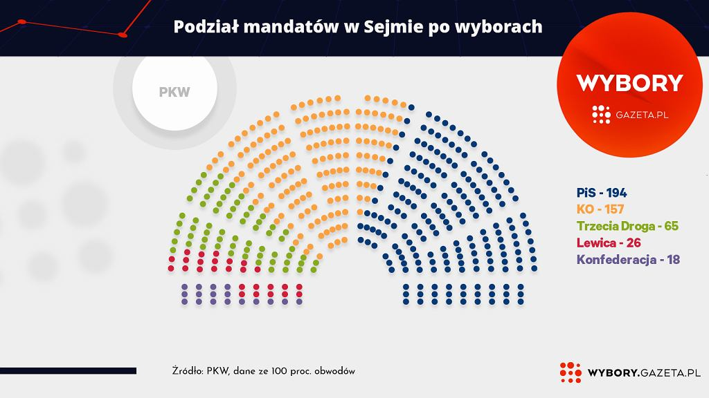

Wyniki wyborów 2023
Wyniki wyborów 2023
Wyniki wyborów do sejmu RP
| Komitet | Liczba głosów | procent głosów | Liczba Mandatów | Procent mandatów |
|---|---|---|---|---|
| KOMITET WYBORY PRAWO SPRAWIEDLIWOŚĆ | 7 640 854 | 35,38% | 194 | 42,17% |
| KOALICYJNY KOMITET WYBORCZY KOALICJA OBYWATELSKA PO .N IPL ZIELONI | 6 629 402 | 30,70% | 157 | 34,13% |
| KOALICYJNY KOMITET WYBORCZY TRZECIA DROGA POLSKA 2050 SZYMONA HOŁOWNI - POLSKIE STRONNICTWO LUDOWE | 3 110 670 | 14,40% | 65 | 14,13% |
| KOMITET WYBORCZY NOWA LEWICA | 1 859 018 | 8,61% | 26 | 5,65% |
| KOMITET WYBORCZY KONFEDERACJA WOLNOŚĆ I NIEPODLEGŁOŚĆ | 1 547 364 | 7,16% | 18 | 3,91% |
| Razem | 460 | 100,00% | ||
